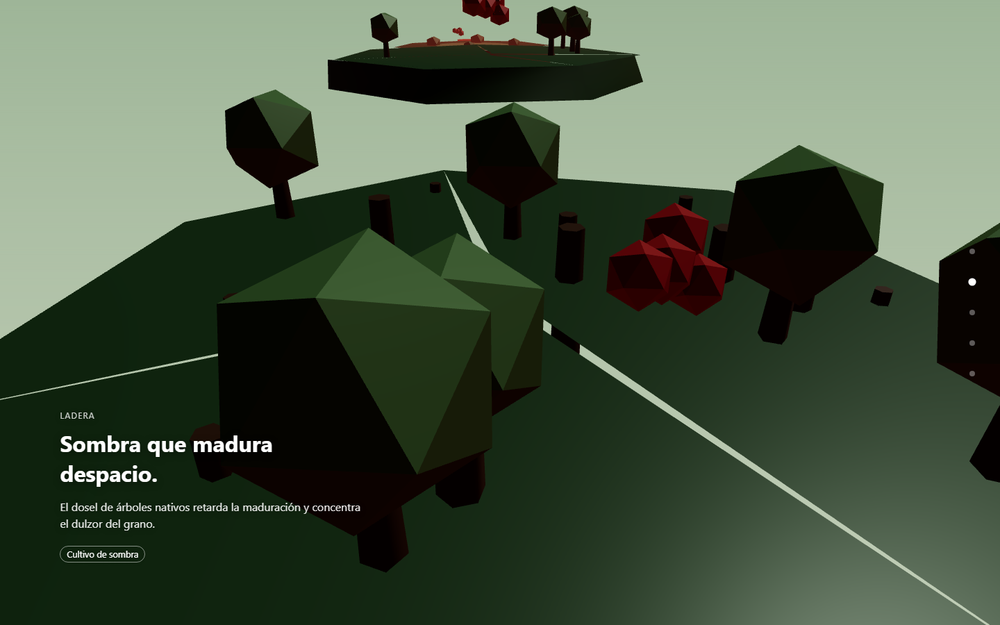
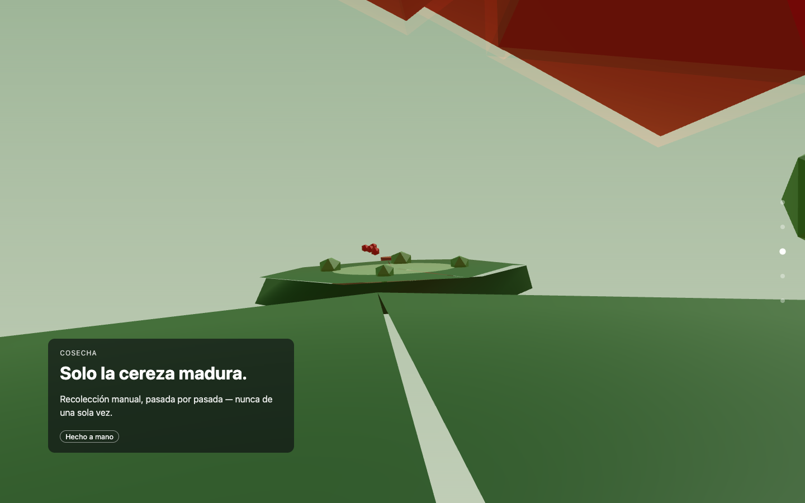
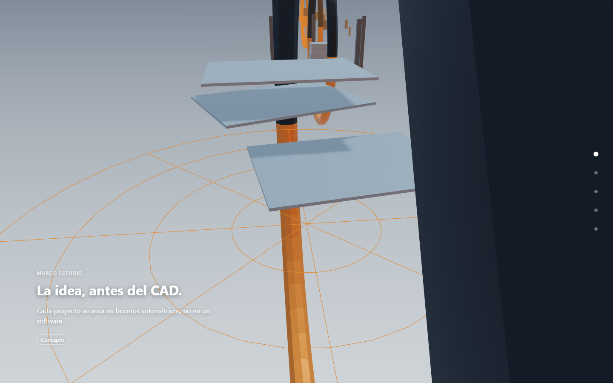
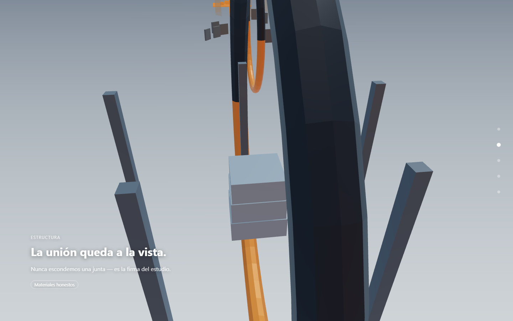
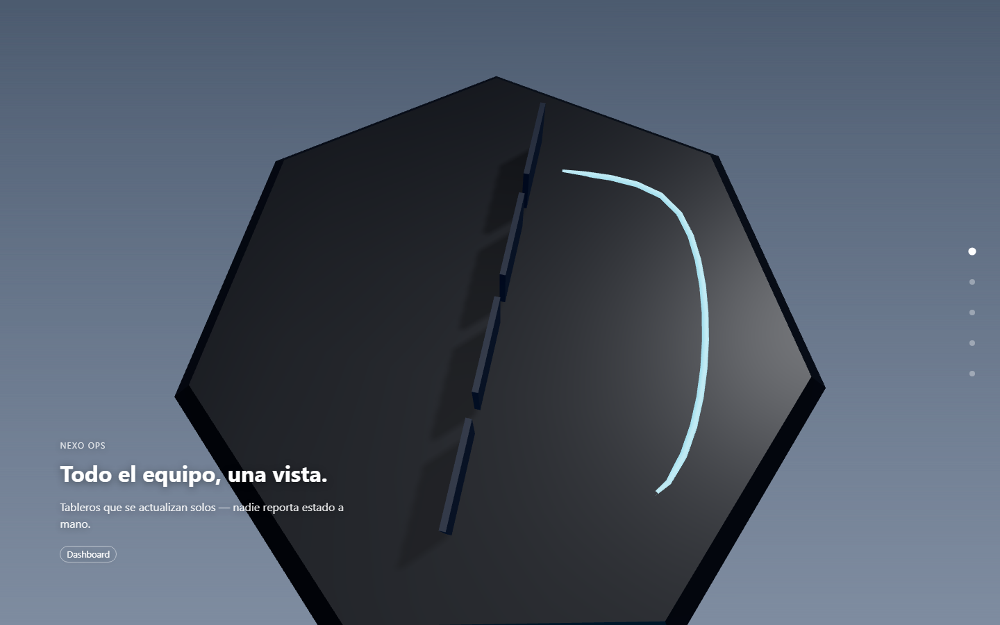
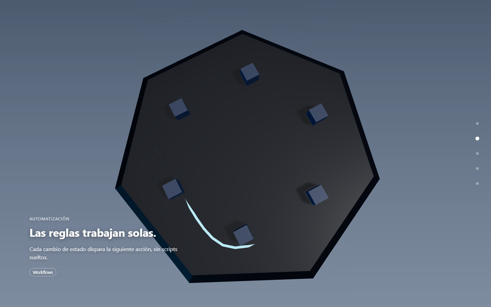
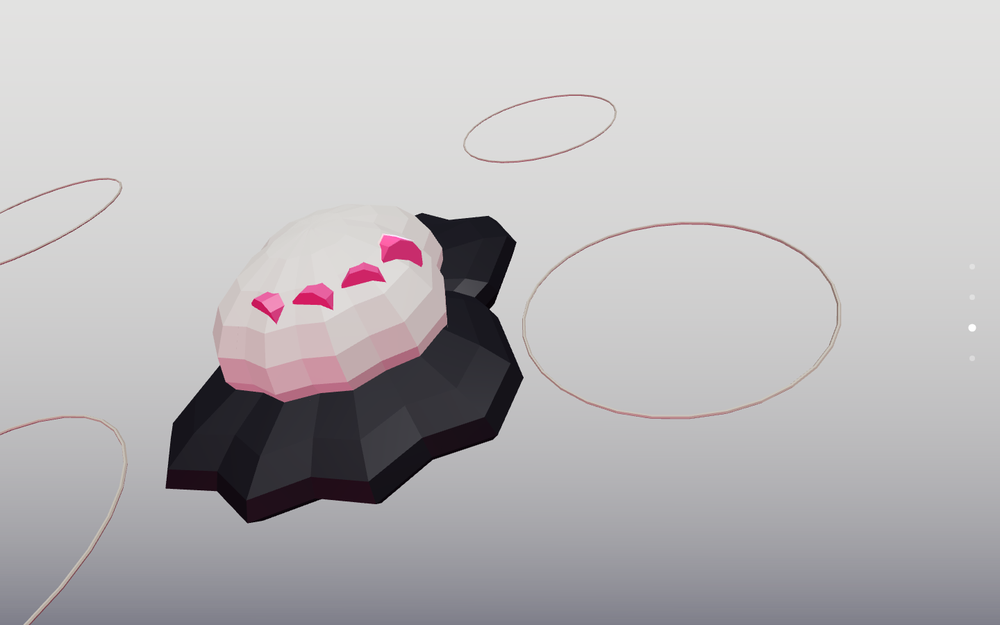
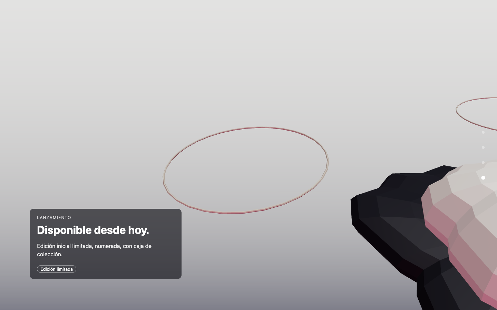
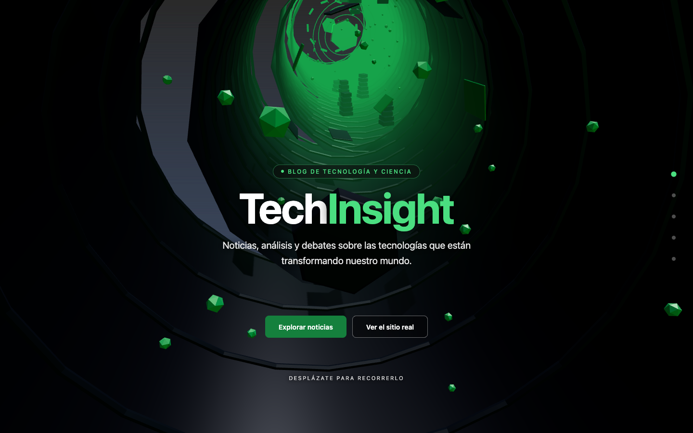
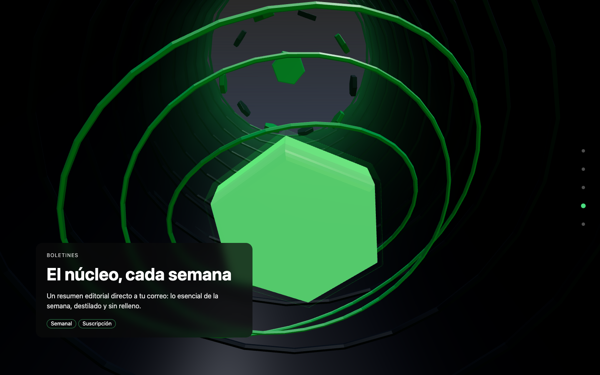

Elige un recorrido
Cada demo se abre en su propia página: haz scroll para mover la cámara.
-


Naturaleza · Salto entre islasAlta Finca
Una finca de café de sombra, del vivero a la taza: terreno low-poly y cámara en picada. Abrir demo → -


Arquitectura · CorredorMarco Estudio
Un estudio de casa pasiva con las uniones estructurales a la vista como sello. Abrir demo → -


SaaS · Descenso verticalNexo Ops
Una inmersión por el stack de un producto: dashboard, flujos, API, base de datos e infraestructura. Abrir demo → -


Producto · ÓrbitaAla Sneaker
Una órbita alrededor de la silueta de una zapatilla: formas de juguete, cámara en picada y edición limitada. Abrir demo → -


Proyecto real · CorredorTechInsight
El hero de un blog en producción, con la misma configuración que el sitio real: un corredor de datos que termina en el foro. Abrir demo →
Última versión: profundidad de campo
La 1.10.0 suma profundidad de campo opcional, guiada por la trayectoria de la cámara,
junto al grano de película y el desenfoque de movimiento de la 1.9.0. Todo se activa
solo si lo pides en config.effects.
Leer más en GitHub.